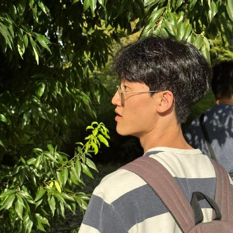

The 10th Workshop on Noisy and User-generated Text (W-NUT)
May 3, 2025 — collocated with NAACL 2025.
The WNUT workshop focuses on core NLP tasks (e.g., POS/NER tagging and translation; not computational social science) over user-generated text, such as that found on social media, web forums, online reviews, digital health records, or language learner essays.
Invited Speakers

|
 |
| Su Lin Blodgett Microsoft Research Montréal |
Verena Blaschke LMU Munich & MCML |
Shared Task
This year, we host MultiLexNorm 2: a shared task on multi-lingual lexical normalization with a focus on non Indo-european languages. After the success of our first MultiLexNorm shared task held in 2021, we have extended our benchmark to more varied languages. More information about MultiLexNorm 2
Important Dates
- Submission Deadline: February 6, 2025 (anytime on earth; dual-submission allowed)
- ARR Commitment Date: February 25, 2025
- Acceptance Notification: March 10, 2025
- Camera-Ready Deadline: March 20, 2025
- NAACL 2025 Findings Deadline: March 31, 2025
- Workshop Day: May 3, 2025
Call for Papers
We seek submissions of long and short papers on
original and unpublished work (same page limit as the NAACL 2025 main conference). All accepted submissions will be presented as talks and/or posters at the workshop, following the NAACL 2025 main conference.
Topics of interest include but are not limited to:
- NLP of noisy text, e.g. POS, NER tagging, Parsing
- Text normalization and error correction
- Paraphrase identification and semantic similarity of short text or noisy text
- Extracting user demographics, profiles, and major life events
- Machine translation and Multilingual NLP over noisy text
- Information extraction from noisy text, global and regional trend detection, and event extraction
- Colloquial language, e.g. idiom detection
- Domain adaptation to user-generated text
- Detecting rumors, contradictory information, sarcasm and humor on social media
- Sentiment analysis
- Temporal aspects of user-generated content (resolving time expressions, concept drift, etc...)
- Representing and mining language variation in user-generated content
- Processing of automatically generated data
Submissions should conform to the ACL style guidelines. Long and short paper submissions must be anonymized. Please submit your papers via OpenReview or commit them via ARR.
Double Submission Policy: Papers that have been or will be submitted to other meetings or publications must indicate at submission time. Authors of a paper accepted for presentation must notify the workshop organizers by the camera-ready deadline as to whether the paper will be presented or withdrawn.
If you would like to present your NAACL findings paper at WNUT, please fill out the following form before Mar 31rd.
Workshop Programme
Timezone: MDT| Start Time | End Time | Contents |
|---|---|---|
| 9:15 | 9:30 | Opening Remarks |
| 9:30 | 10:30 | Invited Talk - Verena Blaschke |
| 10:30 | 11:00 | Coffee Break & Poster Presentations |
| 11:00 | 12:00 | Poster Presentations |
| 12:00 | 13:30 | Lunch & Networking |
| 13:30 | 15:00 | Oral Presentations |
| 15:00 | 15:30 | Best Paper Presentations |
| 15:30 | 16:00 | Coffee Break |
| 16:00 | 17:00 | Invited Talk - Su Lin Blodgett |
| 17:00 | 17:10 | Closing |
Organizers
 |
 |
 |
 |
 |
 |
|
| JinYeong Bak Associate Professor SungKyunKwan University |
Rob van der Goot Associate Professor IT University of Copenhagen |
Hyeju Jang Assistant Professor Indiana University Indianapolis |
Weerayut Buaphet Ph.D. Student Vidyasirimedhi Institute of Science and Technology |
Alan Ramponi Senior Researcher Fondazione Bruno Kessler |
Wei Xu Associate Professor Georgia Institute of Technology |
Alan Ritter Associate Professor Georgia Institute of Technology |
Contact
jy.bak@skku.eduProgram Committee
- Abhai Pratap Singh (Carnegie Mellon University)
- Aditya Jain (Applied Research Scientist )
- Alan Ramponi (Fondazione Bruno Kessler)
- Andreas Spitz (Universität Konstanz)
- Antonios Anastasopoulos (Athena Research Center)
- Chao Jiang (Georgia Institute of Technology)
- Dan Simonson (BlackBoiler, Inc.)
- Danae Sanchez Villegas (University of Copenhagen)
- Daniel Varab (German Research Center for AI)
- Danilo Croce (University of Roma Tor Vergata)
- Dustin Wright (University of Copenhagen)
- Eduardo Blanco (University of Arizona)
- Emily Allaway (University of Edinburgh)
- Günter Neumann (German Research Center for AI)
- H. Schwartz (Stony Brook University (SUNY))
- Hamed Alhoori (Northern Illinois University)
- HyunJin Kim (Sungkyunkwan University)
- Iñaki San Vicente (Orai NLP Technologies)
- Ishan Jindal (IBM Research)
- Jaehyeok Lee (Sung Kyun Kwan University)
- Jing Li (The Hong Kong Polytechnic University)
- Joel R. Tetreault (Dataminr)
- Kokil Jaidka (National University of Singapore)
- Lucy H. Lin (Spotify)
- Manuel Montes (INAOE)
- Maria Antoniak (Copenhagen University)
- Micha Elsner (Ohio State University)
- Mika Hämäläinen (Metropolia University of Applied Sciences)
- Mike Zhang (Aalborg University (Copenhagen))
- Mirco Schönfeld (Universität Bayreuth)
- Naoki Otani (Megagon Labs)
- Nikola Ljubešić (Jožef Stefan Institute)
- Paul Cook (University of New Brunswick)
- Rahul Raja (LinkedIn)
- Sachin Kumar (Ohio State University, Columbus)
- Sai P Vallurupalli (University of Maryland, Baltimore County)
- Shubhashis Roy Dipta (University of Maryland, Baltimore County)
- Suyoung Kim (Sungkyunkwan University)
- Sweta Agrawal (Instituto de Telecomunicações)
- Tommaso Caselli (University of Groningen)
- Vincent Ng (University of Texas at Dallas)
- Vincent Siddons (Indiana University)
- Vishal Shah (Virginia Department of Wildlife Resources)
- W. Graham Mueller (Leidos)
- Xiaojun Wan (Peking University)
- Yasuhide Miura (FUJIFILM)
- YeongJun Hwang (Sung Kyun Kwan University)
- Yoshinari Fujinuma (AWS AI Labs)
Volunteer
|  |
| Jaehyeok Lee Ph.D. Student SungKyunKwan University |
Sponsor
 |
| SungKyunKwan University Department of Artificial Intelligence & ICT Research And Education Foundation |
ACL Anti-harassment Policy